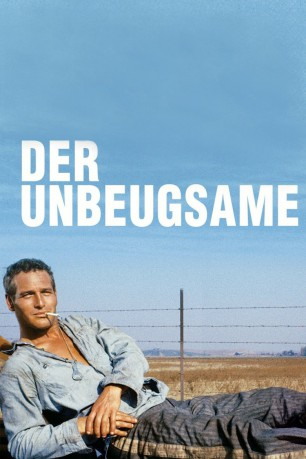

#5079 Der Unbeugsame
Alternativ: Cool Hand Luke
Auszeichnungen: 1 Oscars gewonnen für 3 Oscars nominiert
 
 IMDB-Wertung: 8.2 / 10
IMDB-Wertung: 8.2 / 10  IMDB-TOP-Platzierung: 175
IMDB-TOP-Platzierung: 175  Metascore: 0
Metascore: 0 
Wegen Randalierens wird der introvertierte Luke Jackson zu einer Gefängnisstrafe verurteilt, die er in einem Knast im Süden der Vereinigten Staaten verbüßen muss. Zwei Ausbruchversuche schlagen fehl. Dafür gewinnt Luke den Respekt der Insassen. Grund genug für den Direktor der Anstalt, Lukes Willen mit allen Mitteln zu brechen.
Jahr: 1967
Dauer: 126 Minuten
FSK: 16
Land: USA Studio: Warner Brothers/Seven ArtsTonspuren:
Untertitel:
Auflösung: 720p (1280x544) Größe: 4474 MB
Genre: Drama, Krimi
Regisseur: Stuart Rosenberg
Drehbuch: Moira Buffini
Soundtrack:
Darsteller:
 Paul Newman als Luke
Paul Newman als Luke George Kennedy als Dragline
George Kennedy als Dragline J.D. Cannon als Society Red
J.D. Cannon als Society Red- Lou Antonio als Koko
- Robert Drivas als Loudmouth Steve
- Strother Martin als Captain
- Jo Van Fleet als Arletta
 Clifton James als Carr
Clifton James als Carr- Morgan Woodward als Boss Godfrey
 Luke Askew als Boss Paul
Luke Askew als Boss Paul- Richard Davalos als Blind Dick
 Robert Donner als Boss Shorty
Robert Donner als Boss Shorty Dennis Hopper als Babalugats
Dennis Hopper als Babalugats- Wayne Rogers als Gambler
 Harry Dean Stanton als Tramp
Harry Dean Stanton als Tramp Charles Tyner als Boss Higgins
Charles Tyner als Boss Higgins Ralph Waite als Alibi
Ralph Waite als Alibi Anthony Zerbe als Dog Boy
Anthony Zerbe als Dog Boy Buck Kartalian als Dynamite
Buck Kartalian als Dynamite- Joy Harmon als The Girl
 Joe Don Baker als Fixer , uncredited
Joe Don Baker als Fixer , uncredited James Gammon als Sleepy , uncredited
James Gammon als Sleepy , uncredited Chuck Hicks als Chief , uncredited
Chuck Hicks als Chief , uncredited Rance Howard als Sheriff , uncredited
Rance Howard als Sheriff , uncredited- Kim Kahana als Convict , uncredited
- Rush Williams als Patrolman , uncredited
- Marc Cavell als Rabbitt
- Warren Finnerty als Tattoo
 John McLiam als Boss Keen
John McLiam als Boss Keen- James Bradley als (uncredited
- Norman Goodwins als Stupid blonde , uncredited
- James Jeter als Wickerman , uncredited
- Robert Luster als Jabo , uncredited
- Donn Pearce als Sailor , uncredited
- John Pearce als John , uncredited
- Cyril 'Chips' Robinson als Ben , uncredited
- Eddie Rosson als Luke's Nephew , uncredited
Datei: X:\1967\Unbeugsame, Der (1967, FSK16, 1280x544).mkv seit 23.12.2016
Festplatte: HD 1900-1970
 Es gibt insgesamt 24 Filme in der Gruppe '1967'
Es gibt insgesamt 24 Filme in der Gruppe '1967'